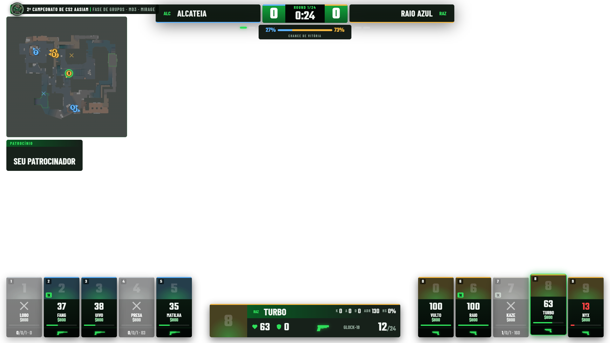
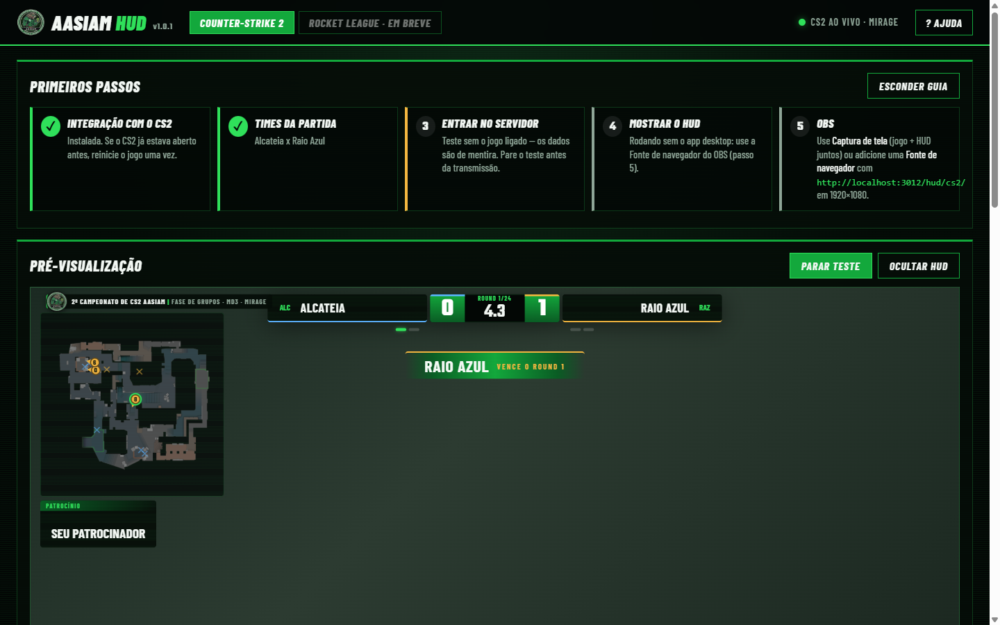
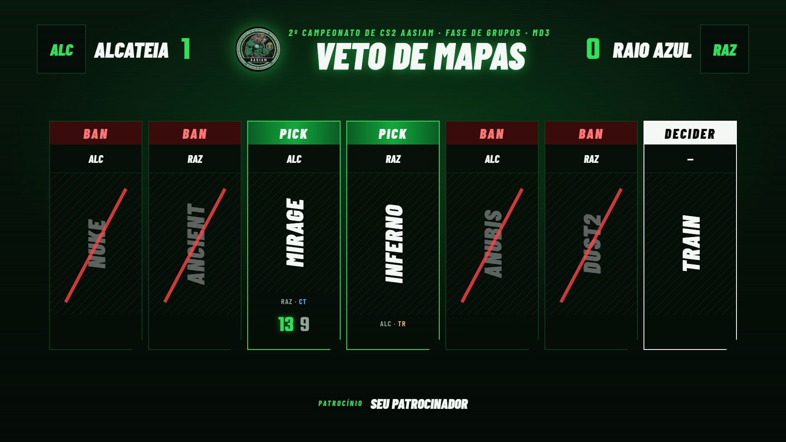
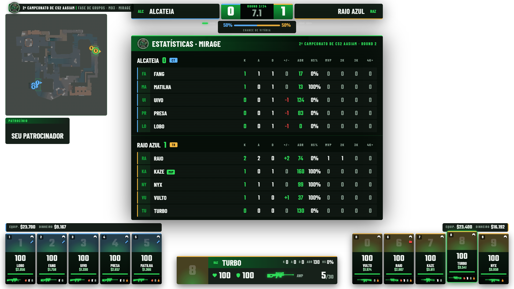

Por cima do jogo
Overlay transparente que não rouba o foco. Shift+W mostra e esconde.
App para transmitir campeonatos de Counter-Strike 2 com placar, jogadores, minimapa, veto de mapas e estatísticas — tudo com a identidade da AASIAM, direto por cima do jogo.
Baixar para Windows
Partida simuladaInstale no PC do observador, entre no servidor como espectador e o HUD aparece sozinho.
Overlay transparente que não rouba o foco. Shift+W mostra e esconde.
Acha o CS2 pela Steam, instala a integração e detecta quando você entra no servidor.
Radar oficial de cada mapa com jogadores, bomba, smokes e molotovs em tempo real.
K/A/D, ADR, HS% e multi-kills por jogador, com quadro automático no fim do mapa.
Foto e apelido de cada jogador, salvos pelo SteamID para o campeonato inteiro.
Cena de veto MD1, MD3 e MD5 com bans, picks, lados e placar de cada mapa.
Logos em rodízio no HUD e na cena de veto, com ordem e tempo ajustáveis.
Baixa versões novas em segundo plano e instala quando você fecha o app — nunca no meio do jogo.
Imagens do próprio app, com uma partida simulada.



Leva menos de dois minutos. Depois disso, as atualizações chegam sozinhas.
AASIAM-HUD-…-Setup.exe.O Windows avisou "O Windows protegeu o computador"? Clique em Mais informações → Executar assim mesmo. O aviso aparece porque o app é novo e não tem assinatura digital paga — o instalador é o mesmo publicado neste repositório.
Você testa grátis com tudo liberado e depois escolhe um plano mensal, semestral ou anual — pagamento por Pix (QR Code), cartão ou boleto, direto no app. Organizadores parceiros da AASIAM recebem licença vitalícia.
Não. O app avisa quando há versão nova, baixa sozinho e instala quando você fecha o programa.
Sim: use Captura de tela (jogo + HUD juntos) ou uma Fonte de navegador com http://localhost:3000/hud/cs2/ em 1920×1080.
Está nos planos — o app já foi feito para receber outros jogos.
No manual do operador, que também abre pelo botão "? Ajuda" dentro do app.